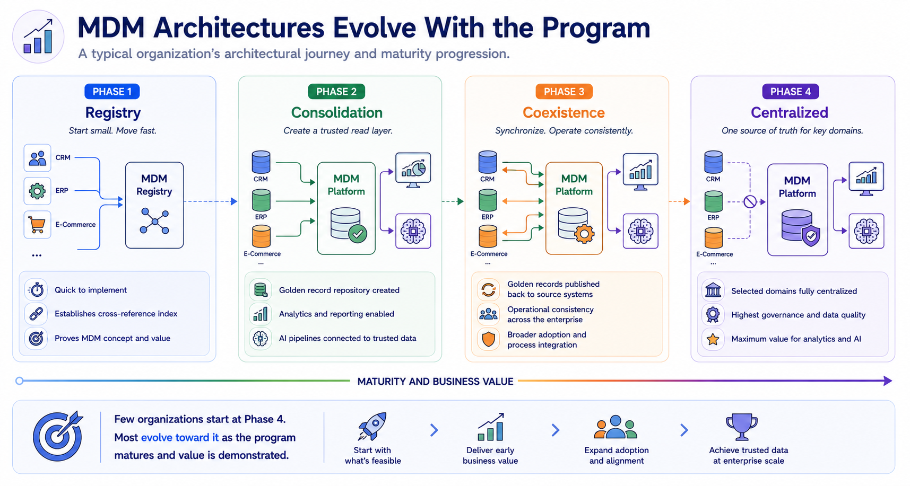
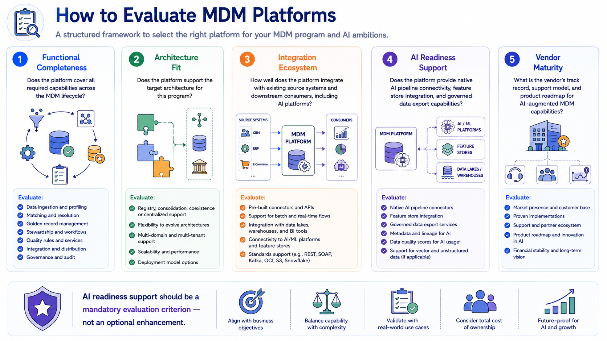
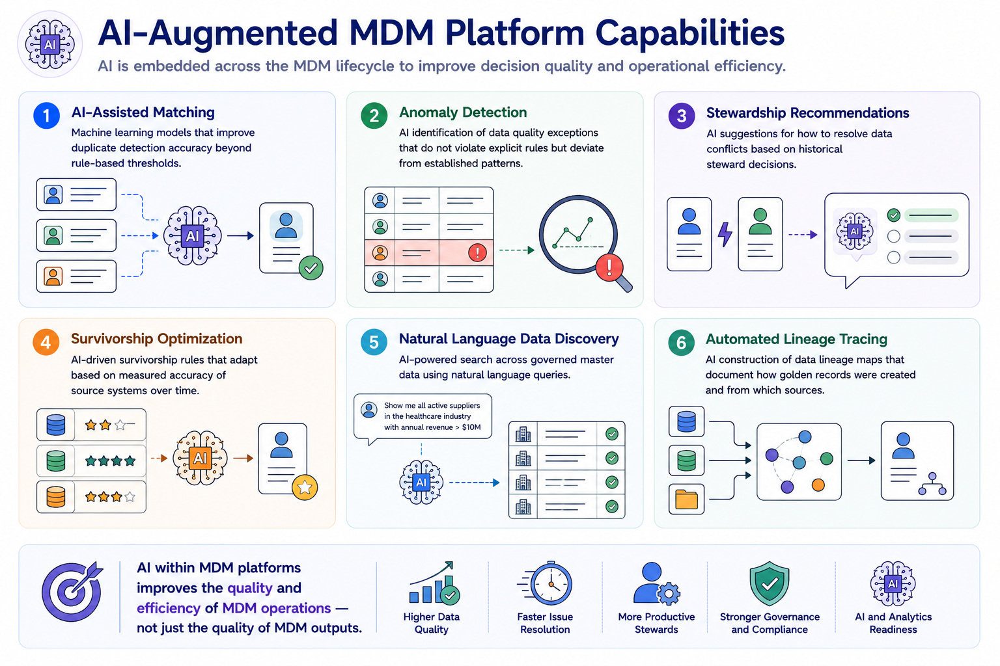
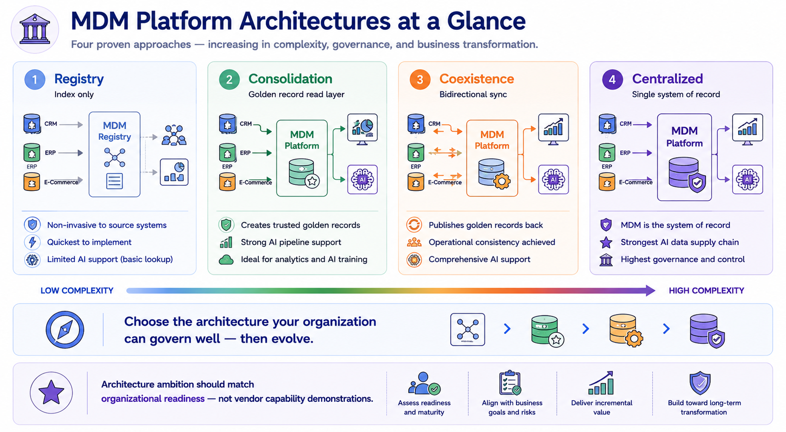

MDM Platforms and Architectures
Module support notes
Architecture Evolution Over Time
Organizations rarely implement their target MDM architecture in a single program phase. Most begin with a registry or consolidation approach — lower implementation complexity, faster time to value, and sufficient for proving the MDM concept and demonstrating early business impact. As the program matures and organizational confidence in MDM governance grows, the architecture typically evolves toward coexistence or centralized models for the highest-priority domains.
This evolutionary approach is deliberate and appropriate — it allows organizations to build the governance muscle, the stakeholder alignment, and the technical expertise that more complex architectures require before committing to the full transformation they represent.
- Registry — quick to implement, establishes a cross-reference index, proves the MDM concept with minimal disruption
- Consolidation — golden record repository created, analytics and AI pipelines connected to a governed read layer
- Coexistence — golden records published back to source systems, operational consistency achieved across the landscape
- Centralized — selected domains fully centralized where governance requirements and organizational readiness justify it
Note
Few organizations start at Phase 4. Most evolve toward it as the program matures and value is demonstrated. Starting with a registry or consolidation architecture is not a sign of limited ambition — it is a sign of organizational self-awareness about what governance capability currently exists and what needs to be built before more complex architectures can succeed.

MDM Platform Evaluation Criteria
Platform evaluation for MDM has become more complex as AI readiness requirements have been added to the traditional functional checklist. Organizations that evaluate MDM platforms only against traditional criteria — entity resolution accuracy, stewardship workflow support, integration breadth — may select a platform that performs well on established capabilities but lacks the AI pipeline connectivity and governed data export features their AI programs will require.
AI readiness support should be a mandatory evaluation dimension, assessed against concrete requirements: can the platform deliver golden records to a feature store? Can it export governed training datasets with full provenance metadata? Can it monitor data drift in the features it supplies to production models?
Warning
AI readiness support should be a mandatory evaluation criterion — not an optional enhancement. Platforms that cannot deliver golden records to a feature store, export governed training datasets with provenance metadata, or monitor data drift in production model inputs represent a strategic gap that will become expensive to address retroactively.

The Emerging Role of AI Within MDM Platforms
The boundary between MDM as a producer of AI-ready data and MDM as a consumer of AI capabilities is increasingly blurred. Leading MDM platforms now embed machine learning across their core capabilities — using AI to improve matching accuracy, detect quality anomalies, recommend stewardship decisions, and optimize survivorship rules based on historical performance data.
For organizations evaluating MDM platforms, the sophistication of these embedded AI capabilities is becoming a meaningful differentiator — not because AI within MDM replaces governance judgment, but because it scales stewardship capacity and improves matching accuracy in ways that rule-based systems cannot match as data volumes and entity complexity grow.
Tip
When evaluating embedded AI capabilities in MDM platforms, ask vendors to demonstrate six specific areas: AI-assisted matching, anomaly detection, stewardship recommendations, survivorship optimization, natural language data discovery, and automated lineage tracing. Platforms that can demonstrate all six are meaningfully ahead of those offering only one or two as preview features.

The right architecture is not the most sophisticated one available — it is the one the organization can govern well today, with a clear path to evolve as capability grows.
